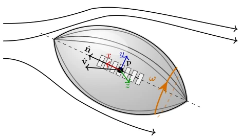
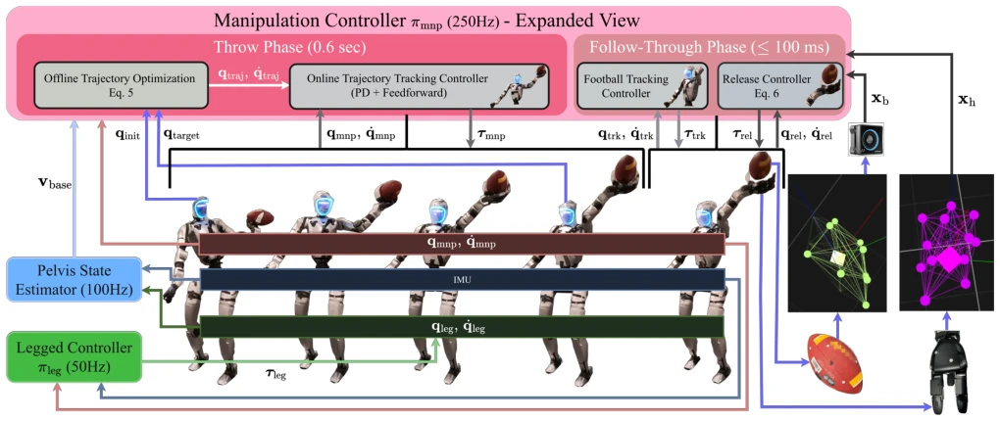
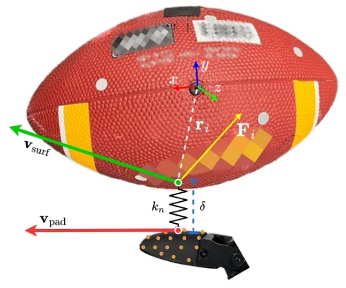
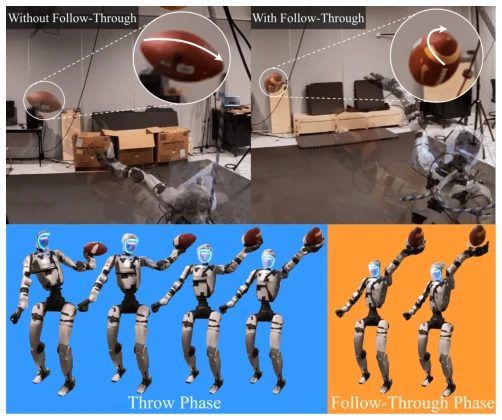
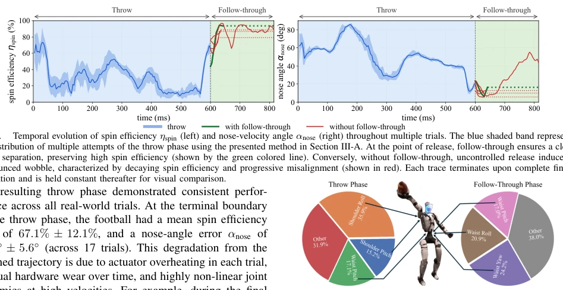

This paper attempts to enable humanoid robots to throw a perfect American football spiral ball, which sounds like sports news, but the core difficulty lies in the complex dynamics at the moment of release. The authors propose a two-stage control strategy, decomposing the "throw" into acceleration and follow-through actions. The highlight is defining quantitative metrics for "tight spiral" and validating the importance of follow-through. However, experiments were assisted by a motion capture system in a controlled environment, real-time performance is questionable, and it relies solely on offline MPC lookup tables. Moreover, only Unitree G1 was used, generalization is unknown. Overall, it is a solid physics control work, but still far from a true "sports robot". After all, human quarterback "muscle memory" has not been fully cracked, this work is more like playing a physics engine in a lab.
Existing robot throwing research mostly focuses on the release speed of opening/closing grippers, ignoring spin injection, especially for aerodynamically anisotropic objects like footballs. Prior work such as [26] uses jaw grippers, ignoring transient contact dynamics. Liu and Billard [25] studied planar models, but cannot capture 3D multi-finger contact. Human quarterback techniques vary, lacking a unified reference, limiting imitation learning [45]. This paper aims to fill this gap, quantify tight spiral, and solve coupled momentum control problems. Currently lacking scientific consensus on defining what a "tight spiral" is, which limits the robot's ability to imitate human experts, thus requiring the establishment of clear physical metrics and dynamics models.

Fig. 2. Football rigid-body state and kinematic quantities used in the tight spiral Definition 1. The football state is defined as xb = (p, R, v, ω), where p, v, ω ∈R3 represent the center-of-mass position, linear velocity, and angular velocity, respectively, and R ∈SO(3) is the football orientation matrix mapping vectors from the body frame to the world frame. The football longitudinal body-frame axis is defined as ex = [1, 0, 0]⊤, and the corresponding world-frame nose direction is given by ˆn = Rex.
Overall is a whole-body control architecture. Lower limbs use EKF to estimate pelvis state for stability. Upper limbs divided into two stages. First stage Throw Phase uses trajectory optimization to generate coupled momentum, assuming rigid grasp, optimization objectives include joint torque, acceleration, and end-effector alignment. Second stage Follow-Through uses MPC to control wrist and fingers, handling contact at the moment of release. Contact model uses superellipsoid + spring model to estimate force. Specifically, MPC optimizes wrist-finger joint velocity sequence, penalizes off-axis angular velocity to suppress wobble, and minimizes ball nose vs linear velocity vector misalignment. Contact force estimated via differentiable geometric model, mapping penetration depth to spring force, thereby predicting the ball's next state. MPC horizon is 15 steps, 4ms per step, uses lookup table to accelerate solving.

Fig. 3. The proposed whole-body control architecture along with the estimation solutions for the humanoid football throwing of a tight spiral throw.

Fig. 4. Illustration of the contact-aware football dynamics model, where vsurf, vpad, and orange dots denote the contact point velocities of the football surface, the fingertip pad, and the sampled contact points, respectively.
Uses Unitree G1 and Dex3-1. Motion capture system OptiTrack. Metrics are spin efficiency and nose-angle. Efficiency is 93.6% with follow-through, drops to 60.9% without follow-through. Proves transient control is key. Torque analysis shows throw phase shoulder-waist dominant, follow-through phase waist dominant. Hardware-wise, thumb added custom extension pin to assist release. Experiments conducted in real world, compared spiral quality with/without follow-through, found ball tumbles without follow-through. Ablation study shows active control of finger contact is crucial for stable spiral.

Fig. 1. Demos of a humanoid robot (Unitree G1 with Dex3-1) throwing a tight spiral American football. The controller has two sequenced phases: the throw phase generates the coupled momentum, while the follow-through phase uses model predictive control (MPC) to regulate the release dynamics and stabilize the tight spiral. Without follow-through (top left), the ball tumbles due to an unstable release; with follow-through, the ball has a stable tight spiral (top right).

Fig. 6. Joint-level torque impulse distribution for the throw and follow- through phases. Each pie chart shows the normalized time integral of joint torque, with the top three contributing joints highlighted. The throw phase is dominated by shoulder roll, waist pitch, and shoulder pitch, while the follow-through phase is dominated by waist yaw, waist roll, and waist pitch.